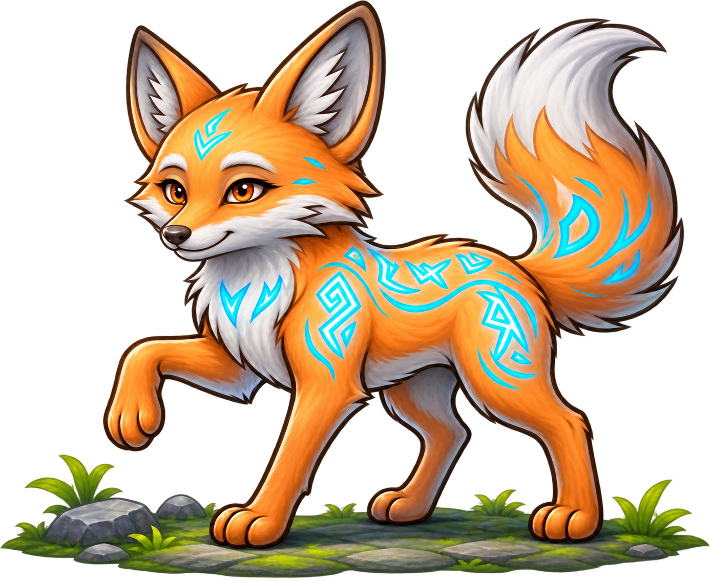

Schopnosti lišky
Návrhářská ukázka: vyber dvojici kamenů a použij „Ukázat odměnu“. Každý modul má vlastní I a II; II nahradí I. Čísla účinků i přiřazení modulů jsou pracovní model. Získané kameny jsou trvalý postup, počet použití v boji se nemění.